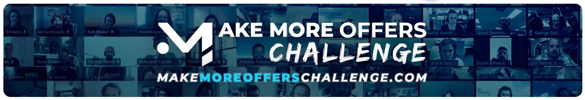
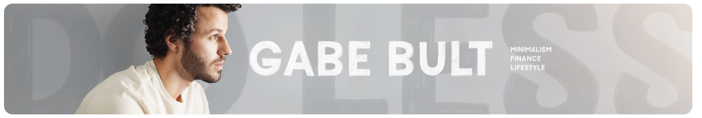

The 31-Day Wisdom Challenge banner
Pedro's YouTube banner for December and January. Its one job: get viewers to sign up for the 2027 challenge. We only need this version now. An evergreen banner comes after the challenge ends.
His $3M ad push starts 7 Dec; most of it runs 26 Dec to 3 Jan.
Challenge runs 1 to 31 January.
71% of his subscribed viewers, plus people who see his ads and look him up.
The action and the words
One action: join the challenge at 31daywisdomchallenge.com. Suggested copy, top to bottom:
A rough sketch of the copy order and brand colours, not a design. Don't say "free": the 2027 challenge is $31 (Pedro on our kickoff call).
Reference: Make More Offers Challenge

- Swap the blue tint for Pedro's navy (#11142C), with orange for the URL and teal for small accents.
- Background idea: a grid of real participants from past Wisdom Challenge calls, if Pedro's team has screenshots. That's social proof without the 20-face guest collage.
- Add Pedro's face on one side so the channel still reads as his.
What's on his banner today

Keep
- The challenge name and "Starting January 1st"
- The URL on its own bar
- Navy as the base colour
Change or drop
- "2026" becomes 2027
- The collage of about 20 guests: too small on a phone, and the 2027 guest list isn't confirmed
- The four testimonial bubbles: unreadable on mobile
Brand assets
Orange
#EB6E22
Navy
#11142C
Teal
#31C2B7
Light grey
#ECECEC
White
#FFFFFF
From "Pedro Adao Colors.pdf" in his brand folder. The folder dates from 2020 to 2022, but it's still linked from his website, so we treat it as current. No fonts are listed; his website uses a tall condensed headline face, and the current banner a rounded bold sans.
Photos of Pedro
- He said on the onboarding form he has photos and can shoot new ones quickly, but didn't send a folder. Ask Pedro, or his assistant if he has one.
- Public options: the approved stage photo in the media kit, and recent studio photos of him holding his new book on faithfulbook.com.
- Best: stills from the Monday 30 Nov filming day. They'll match the new videos.
Size and safe area
all text and the URL go here
Upload at 2560 × 1440 px (16:9), 6 MB max. Phones show only the centre 1235 × 338 px, so the title, date and URL must fit there. Check it on a phone before it goes live.
Change at the same time
- The link under his channel name currently goes to kingdomwealthreset.com/step1. Point it to 31daywisdomchallenge.com for December and January.
- The channel description still opens with "The Industry Leading Expert On Challenge Marketing". Pedro told us he doesn't want to be seen as an online marketing guy, so it should lead with the Kingdom and money instead.
Later: the evergreen banner

To ask Pedro
- A folder of recent photos, or a time on 30 Nov to shoot banner stills.
- Screenshots of past challenge calls for the participant grid.
- Whether he has an assistant who can send assets.
- Any fonts his team uses for the challenge and the Faithful book.